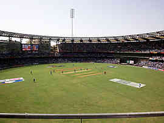
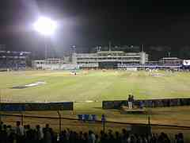
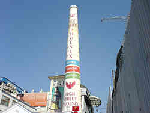
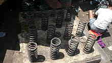
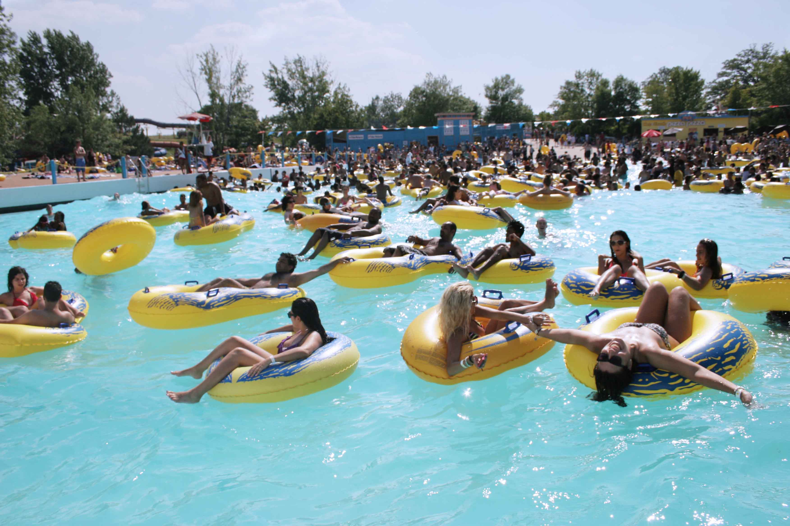

|
|
Sports venues, Markets and malls

Wankhede Stadium
The Wankhede Stadium is a cricket stadium in the Indian city of Mumbai. The stadium now has capacity of 33,482, following renovations for the 2011 Cricket World Cup. Before the upgrade, the capacity was approximately 45,000. The Wankhede stadium has been host to numerous high profile cricket matches in the past, including the match in which Ravi Shastri hit six sixes in an over. The stadium also hosted the 2011 Cricket World Cup Final, in which India defeated Sri Lanka by 6 wickets, apart from many other matches in both the 1996 as well as 2011 Cricket World Cup. The stadium witnessed the historic last match of Sachin Tendulkar's international career.

Brabourne Stadium
The Brabourne Stadium is a cricket ground in the Indian city of Mumbai. The ground is owned by the Cricket Club of India (CCI). Brabourne Stadium is India's first permanent sporting venue. The North Stand of the Brabourne housed the Board of Control for Cricket in India (BCCI) headquarters and the 1983 Cricket World Cup trophy until 2006 when both were moved to the newly built Cricket Centre at the nearby Wankhede Stadium.

High Street Pheonix
High Street Phoenix, formerly known as Phoenix Mills, is one of the largest shopping malls in India, situated in Lower Parel, Mumbai. Its gross floor area is 3,300,000 square feet (310,000 m2). In addition to the mall, the compound hosts a five-star hotel, a multiplex, commercial space and a residential tower. High Street Phoenix (HSP) has more than 500 stores, premium (including Ermenegildo Zegna, Canali, Bally Shoe, Bottega Veneta, Burberry, Chanel, Dolce Vita, Emporio Armani, Jimmy Choo) as well as budget friendly options (FabIndia, AND, Benetton, Zara, Lifestyle). It is owned by The Phoenix Mills Co.Ltd., led by Managing Director, Atul Ruia. HSP houses a variety of F&B, entertainment, commercial and residential complexes. The mall consists of the Palladium, SkyZone and Grand Galleria. South Asia’s largest 20 lane bowling concourse, was first started here in 1996. India’s first Hyper market concept Big Bazaar was introduced in 2001 at High Street Phoenix.

Chor Bazaar
Chor Bazaar, located near Bhendi Bazaar in South Mumbai, is one of the largest flea markets in India. The area is one of the tourist attractions of Mumbai. The word chor means thief in Hindi and Marathi. The market is thought to have originally been called Shor Bazaar, meaning noisy market. The current name is said to have come from a British mispronunciation. Eventually however, stolen goods started finding their way into the market, resulting in it living up to its new name. According to popular legend, if you lose anything in Mumbai you can buy it back from the "Chor Bazaar". The market has been mentioned in popular novels, including Rohinton Mistry's Such a Long Journey, where it is described as "not a nice place".

Water Kingdom
Water Kingdom is Asia's largest theme based water park. The Island of Fun is located on the coast of Mumbai.
go to top
Home
Developed by SUGATO CHAKRABORTY (currently pursuing B.Tech in CSE from West Bengal University of Technology, developer at Boscom Software,2014)
|
|